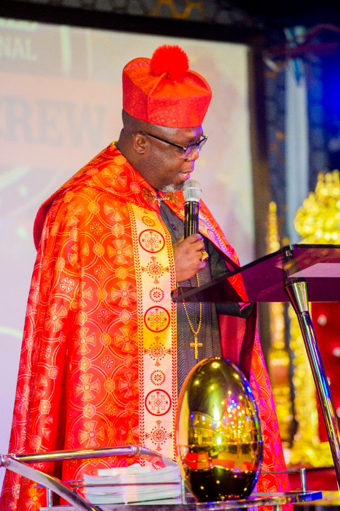

The Word
Doctrine and the Scriptures
Christian doctrine and a sound handling of the Word of God.
Formation
Train, equip, and empower.
Soul Food Ministerial College is a Christian ministerial training institution founded by Bishop Dr. Eddie Letsa. He is its Director, including the School of the Prophets – Prophets Academy. The college equips, trains, and prepares men and women of God for effective ministry and service in the Kingdom of God.

The training is biblical, theological, spiritual, and practical, so a student grows in understanding, maturity, leadership, and ministerial excellence.
The Word
Christian doctrine and a sound handling of the Word of God.
Prophets Academy
Prophetic ministry, taught within the wider work of the college.
The work
Pastoral leadership, evangelism, prayer, and spiritual development.
The college’s commitment goes beyond imparting knowledge. It seeks to build character, develop spiritual gifts, strengthen ministerial values, and prepare God’s servants for responsible leadership and impactful Kingdom service.
Ordination and recognition of ministers also belong to the Soul Food Ministerial Council, of which Bishop Dr. Eddie Letsa is President. Enrolment is arranged with the college.

Bishop Dr. Eddie Letsa founded the college and directs Soul Food Ministerial College – Prophets Academy. The aim is spiritually grounded, knowledgeable, disciplined ministers who can rightly handle the Word of God and fulfil their assignments.